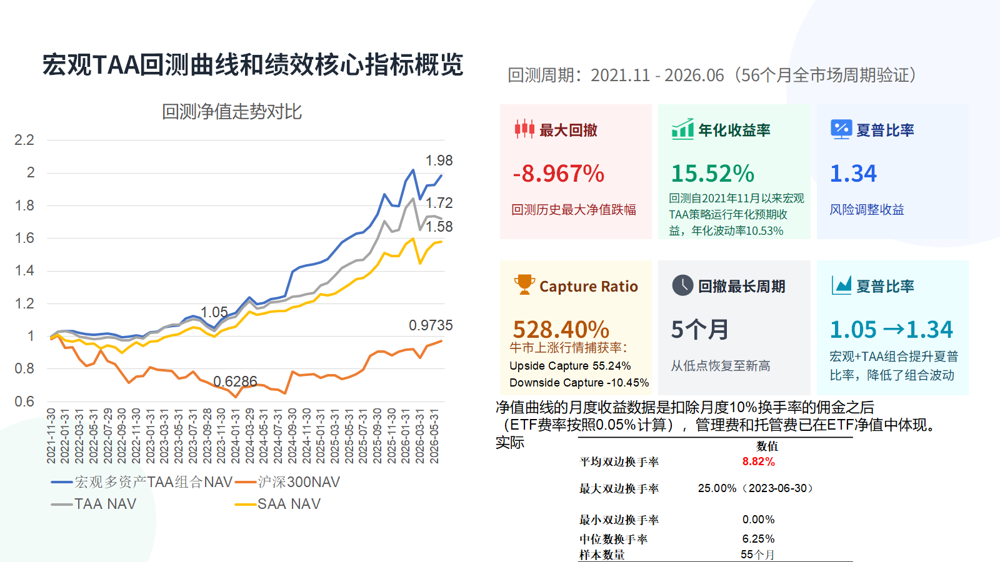
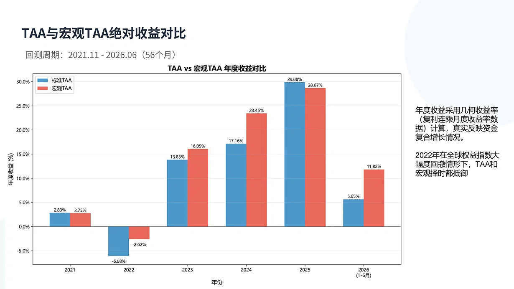
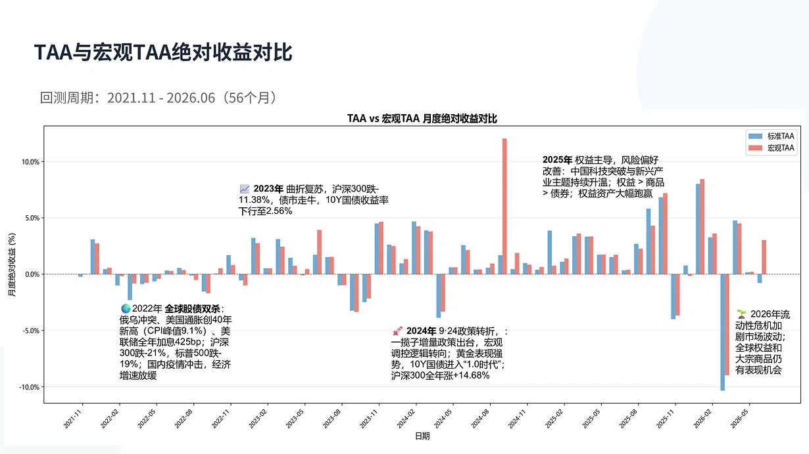
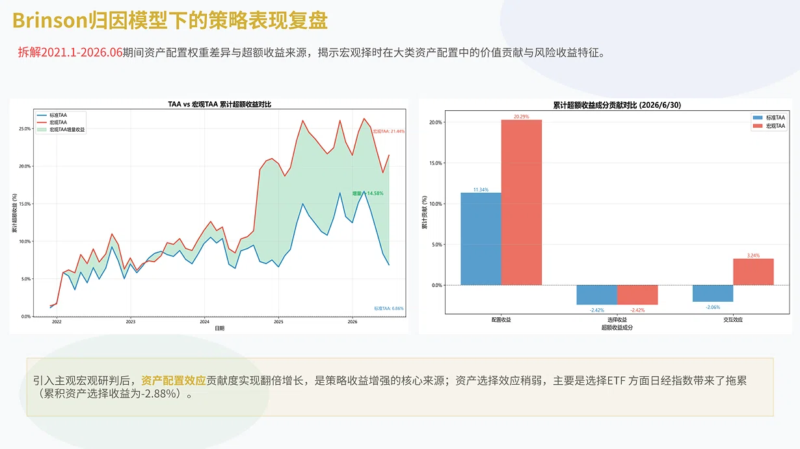
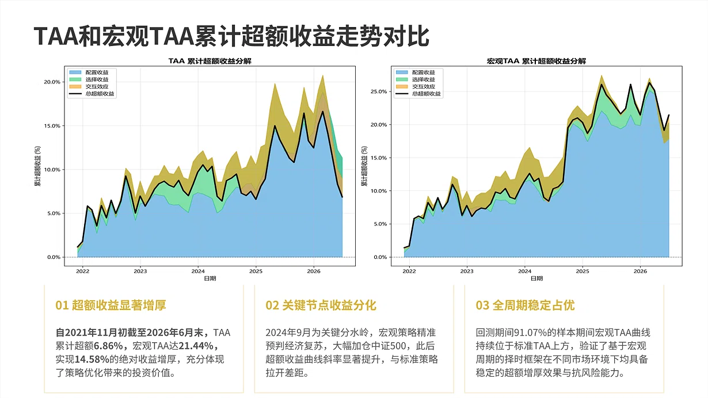
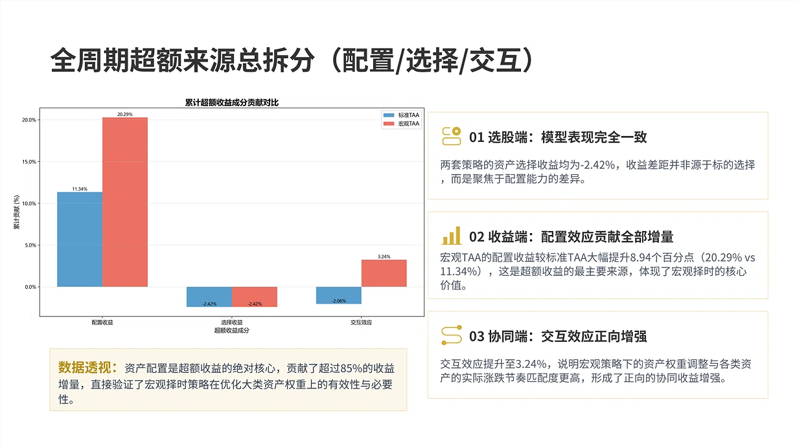
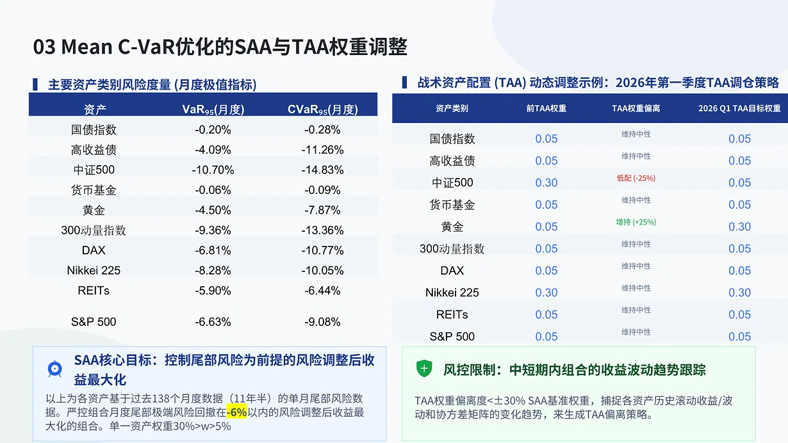
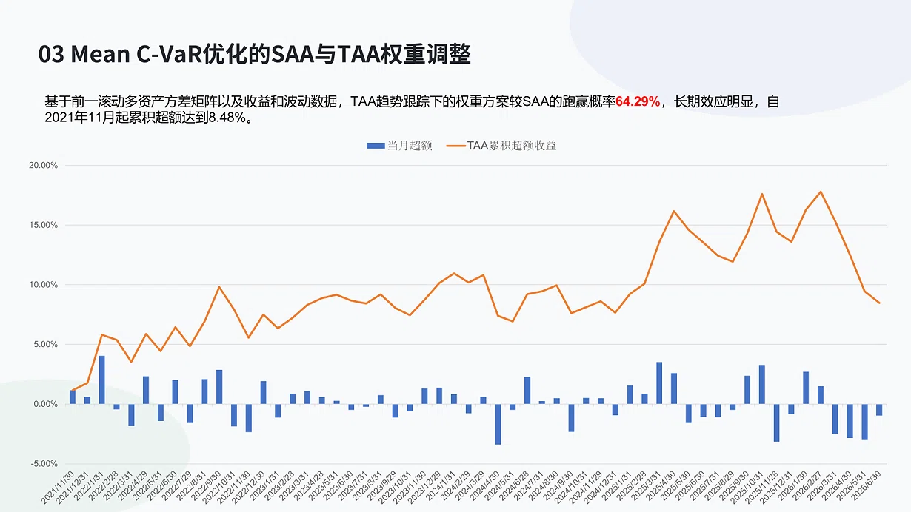

宏观多资产 TAA 策略
融合主观洞察与量化模型的全天候配置方案
回测周期 2021.11 – 2026.06 · 56个月
超额收益增厚
+14.58%
宏观择时 vs 标准TAA
净值走势 宏观TAA vs 标准TAA
自2021年11月至今，宏观TAA策略累计净值达到 1.75，年化收益 12.56%，年化波动 9.89%，最大回撤控制在 10.3%。在全球股债双杀、流动性危机等多重压力下，策略展现了较强的抗跌性和回撤修复能力。

2022年全球股债双杀阶段，策略回撤显著低于宽基指数；2024年9月后精准捕捉复苏行情，净值曲线斜率明显提升
投资框架 Black-Litterman + Singer-Terhaar + Mean-CVaR
突破传统均值-方差模型对历史数据的过度依赖，通过融合市场均衡逻辑与前瞻性宏观观点，构建更适配未来市场环境的稳健配置基准。
- 反向优化锚定全球均衡基准，反推隐含均衡收益
- Singer-Terhaar 跨市场均衡定价，兼顾全球与本地风险
- 贝叶斯融合"市场基准"与"主观观点"
- Mean-CVaR 尾部风险优化，严控极端损失
- 覆盖中美日欧全球主流市场股债商
- 纳入国债、AA+高收益债、黄金、REITs
- 月度宏观冲击 → 周期判定 → 动态调仓
- 事前/事中/事后多维风控体系
宏观增强TAA 五阶段经济周期
按月跟踪 PMI、CPI/PPI、非农数据、美联储政策、全球通胀预期 五大核心宏观信号，动态划分经济周期阶段并调整大类资产权重，有效修正纯量化模型的滞后性。
复苏
扩张早期
扩张晚期
放缓
收缩 / 通缩
年度收益对比 标准TAA vs 宏观TAA
宏观TAA在各年度均跑赢标准TAA。2024年9·24政策转折后，宏观策略精准预判经济复苏，大幅加仓中证500，全年录得 29.88% 的年度收益，超额优势显著。

2022年全球股债双杀环境中，宏观TAA将亏损从 -6.08% 收窄至 -2.62%，防御能力突出
月度绝对收益 2021.11 – 2026.06
从月度维度看，宏观TAA在市场下行阶段的回撤控制更优，上行阶段的弹性更强。2023年曲折复苏、2025年权益主导等不同市场环境中，策略均保持了稳定的正向超额。

91.07%的样本期间，宏观TAA曲线持续位于标准TAA上方
Brinson 归因分析 配置效应贡献 85%+ 超额
引入主观宏观研判后，资产配置效应贡献度实现翻倍增长，是策略收益增强的核心来源。资产选择效应稍弱，主要受日经指数相关ETF拖累，累积资产选择收益为 -2.88%。

配置收益从标准TAA的11.34%提升至宏观TAA的20.29%，提升8.94个百分点
累计超额收益走势 宏观TAA累计超额 21.44%
自2021年11月初至2026年6月末，TAA累计超额 6.86%，宏观TAA达 21.44%，实现 14.58% 的绝对收益增厚。2024年9月是关键分水岭，宏观策略精准预判经济复苏，此后超额曲线斜率显著提升。

2024年9月加仓中证500的决策，直接拉动组合收益触及阶段峰值
超额来源总拆分 配置 / 选择 / 交互
两套策略的资产选择收益均为 -2.42%，收益差距并非源于标的选择，而是聚焦于配置能力的差异。宏观TAA的配置收益较标准TAA大幅提升 8.94个百分点，交互效应提升至 3.24%，说明宏观策略下的权重调整与资产涨跌节奏匹配度更高。

资产配置是超额收益的绝对核心，贡献了超过85%的收益增量
风险度量 & TAA调仓 VaR₉₅ / CVaR₉₅
严控组合月度尾部极端风险回撤在 -6% 以内，单一资产权重限制在 30% > w > 5%。中短期内追踪组合收益波动趋势，TAA权重偏离度控制在 ±30% SAA基准权重以内。

中证500月度CVaR为 -14.83%，国债指数仅 -0.28%，资产间风险差异显著，分散化价值突出
策略优势
立足全球宏观视角，利用不同经济体的周期错位与资产相关性进行跨境配置。不局限于单一市场的波动影响，在任何宏观环境下都能找到合适的投资标的。

通过构建低相关性资产组合，即便对某类资产判断失误，整体风险仍然可控
多资产全天候 · 不依赖单一市场
任何宏观环境下都有可投资资产
策略延续性强 · 驱动逻辑长期不变
严格回撤控制 · CVaR事前约束
容错率高 · 低相关性资产分散风险